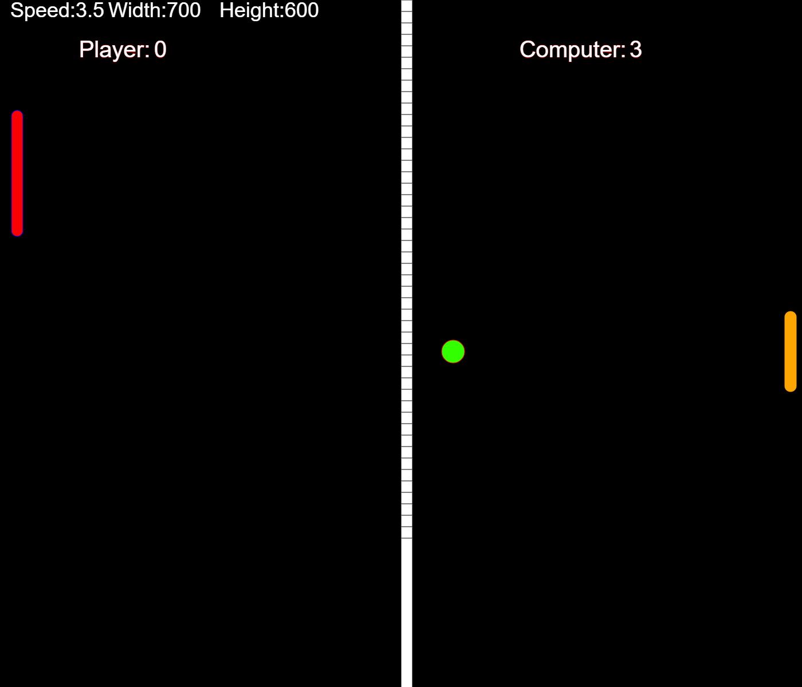

1. Keep your laptop screen straight
2. Move your laptop 3-4 feet away from yourself
3. Move your right hand in ascending manner,
a red dot should appear on your right wrist
4. Press the 'Play' button while keeping a distance from your computer
5. Make movement according to the movement/position of the red paddel
